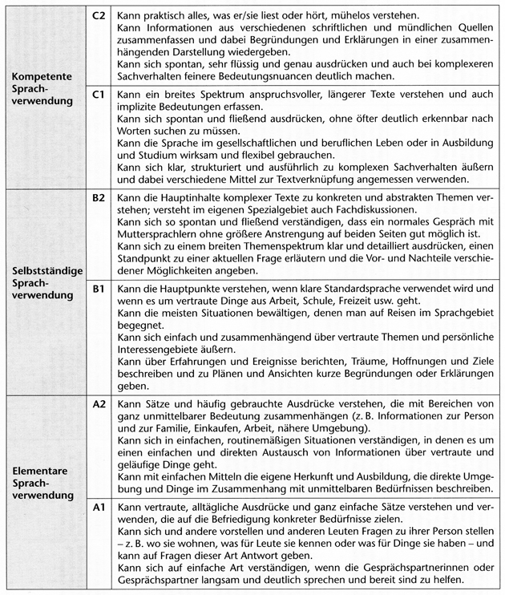
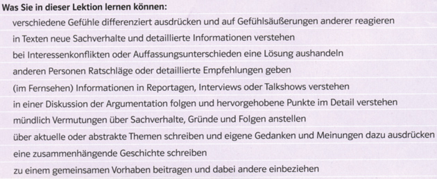
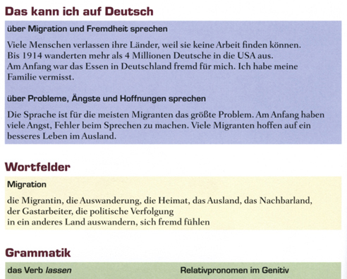
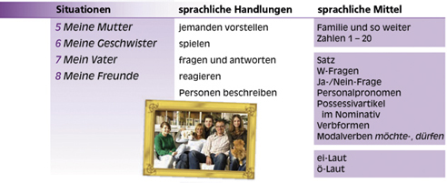
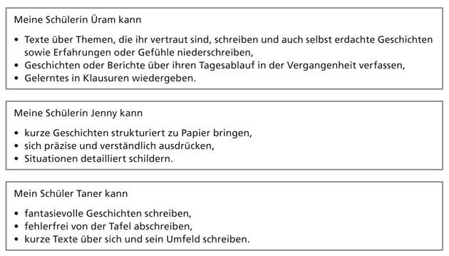
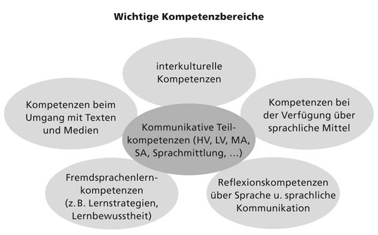

4 Curriculare Vorgaben und Unterrichtsplanung (DLL6)
4.1 Einflussfaktoren auf Unterricht
Im Hinblick auf die Ziele des Fremdsprachenunterrichts hat es in den letzten Jahren in vielen Ländern grundlegende Veränderungen und Neuorientierungen gegeben. Dabei ist ein wichtiger Einflussfaktor die didaktisch-methodische Fachdiskussion, die sich zunehmend von globalen und starren vermittlungsmethodischen Konzepten entfernt und sich eher an sogenannten didaktisch-methodischen Prinzipien orientiert. Vor allem spielt jedoch in Europa und zunehmend weltweit ein Dokument eine zentrale Rolle, und zwar der Gemeinsame europäische Referenzrahmen für Sprachen (GER). Wie der Name schon sagt, bildet der GER über nationale Bildungs- und Lerntraditionen hinaus einen gemeinsamen Rahmen für das Lehren, Lernen und Beurteilen von sprachlichen Kompetenzen (Fähigkeiten).
Sie werden merken, dass wir Ihnen in Kapitel 1 recht viele Informationen präsentieren, die für Sie zum Teil neu sein dürften. Bei diesen Informationen zum GER, zu Leistungsstandards und zu Curricula/Lehrplänen handelt es sich allerdings um für Sie wichtige Hintergrundinformationen, die sich auf Ihren Unterricht auswirken, in der Regel allerdings eher indirekt – z. B. über Lehrwerke und Prüfungen. Doch auch, wenn der Einfluss sich lediglich indirekt auswirkt, sollten Sie ihn kennen,um dann entscheiden zu können, wie Sie Ihren eigenen Handlungsspielraum möglichst optimal gestalten können.
Wir konzentrieren uns im Folgenden vor allem auf Konzeptionen, Veränderungen und Neuerungen, die in den letzten Jahren zunehmend an Bedeutung gewonnen haben. Dabei können wir leider nicht explizit auf Ihre lokalen Kontexte eingehen; wir werden Ihnen aber – z. B. in Form von Reflexionsaufgaben – Möglichkeiten aufzeigen, wie Sie die im Folgenden behandelten Konzepte auf Ihren Kontext übertragen können.
Mit Kapitel 1 möchten wir erreichen, dass Sie
- die Bedeutung des Gemeinsamen europäischen Referenzrahmens für Sprachen u. a. in Bezug auf den eigenen Unterricht einschätzen können,
- mit Kann-Beschreibungen als Instrument der Charakterisierung fremdsprachlicher Kompetenzen und als Basis zur Formulierung von Lern- und Prüfungszielen vertraut sind,
- Konzepte wie Handlungsorientierung, Kompetenzorientierung, Standardorientierung, Curriculum/Lehrplan und weitere verwandte Begriffe genauer kennenlernen und auf den eigenen Unterricht beziehen können,
- Verbindungen zwischen den hier behandelten Konzepten und entsprechenden Konzepten in Ihrem Land herstellen können.
Um Ihnen den Zugang zu diesen recht komplexen Aspekten zu erleichtern, möchten wir Sie zunächst anhand mehrerer konkreter Aufgaben dafür sensibilisieren, was eigentlich „eine Fremdsprache können“ und „in und mit Hilfe einer Fremdsprache handeln können“ bedeutet.
4.1.1 Können, Wollen, Sollen: Vorüberlegungen
Sprachkönnen und sprachliches Handeln kann in Form von positiven Kann-Aussagen beschrieben werden, also in Form von Beschreibungen der Kompetenzen, über die man verfügt. Es kann anhand des sprachlichen Handelns überprüft werden, ob das Beschriebene auch tatsächlich sprachlich realisiert werden kann.
Es ist so hoffen wir deutlich geworden, dass Aussagen über Können, Wollen, Sollen in jeglichen Lern- und Lehrkontexten eine wichtige Rolle spielen und dass Kann-Beschreibungen ein zentrales Mittel darstellen, um Aussagen über Können, Wollen und Sollen zu formulieren. Dabei kann man insbesondere drei Aspekte (Dimensionen) von Können, Sollen und Wollen unterscheiden: Wissen, Tun, Haltung oder Meinung. Diese drei Aspekte menschlichen Handelns und Denkens kann man auch in Lernzielen von fremdsprachlichem Unterricht wiedererkennen. Sie werden u. a. im zweiten Abschnitt dieser Einheit wieder aufgegriffen, wenn es darauf aufbauend um die konkrete Unterrichtsplanung geht.
Zusammenfassung: In diesem Kapitel haben wir versucht, Sie zunächst zu einer Selbsteinschätzung Ihrer eigenen sprachlichen Fähigkeiten (Kompetenzen) anzuregen. Im Anschluss daran sollten Sie anhand eines Videoausschnitts die sprachlichen Fähigkeiten von zwei Lernenden einschätzen. Vor diesem Hintergrund haben wir uns dann kurz mit der Rolle von Können, Wollen und Sollen im unterrichtlichen Kontext beschäftigt. Dieses Kapitel sollte der Sensibilisierung für die weiteren Inhalte dienen.
Im Folgenden werden wir uns nun mit einem zentralen Dokument, dem Gemeinsamen europäischen Referenzrahmen für Sprachen (GER) beschäftigen, der einen großen Einfluss auf Curricula, Lehrwerke, Prüfungen und damit auf den Fremdsprachenunterricht insgesamt hat. Im GER wird ein handlungs- und kompetenzorientierter Ansatz vertreten: Sprachliches Können und kommunikatives Handeln werden mit Hilfe von Kann-Aussagen im Detail beschrieben und nach Niveaustufen unterschieden. Diese Beschreibungen können von Ihnen dazu genutzt werden, sprachliche Leistungen Ihrer Lernenden genauer zu charakterisieren und im Niveau voneinander zu unterscheiden. Die Beschreibungen können außerdem dazu dienen, gestufte Ziele für das Sprachenlernen und für Prüfungenzu formulieren, d. h, sie stellen nach Niveaus differenzierte Lernziele und Prüfungsziele dar. Auf diese Weise können auch individuelle und gruppenspezifische Lernzuwächse erfasst und genauer beschrieben werden. Damit bildet der GER eine wichtige Grundlage sowohl für spezifische unterrichtliche Fördermaßnahmen als auch für Lehrwerke, Tests und Prüfungen sowie für eine Selbstevaluation z. B. anhand eines Portfolios. Wir werden uns in den nächsten beiden Teilkapiteln zunächst dem GER und hier speziell den zentralen Konzepten der Handlungs- und Kompetenzorientierung widmen.
4.1.2 Der gemeinsame europäische Referenzrahmen
Der Gemeinsame europäische Referenzrahmen für Sprachen, kurz GER, wurde nach einer langen Entwicklungsphase vom Europarat 2001 in einer englischen und französischen Version sowie in einer deutschen Übersetzung in seiner (vorläufig) endgültigen Fassung veröffentlicht.Neben der Abkürzung GER oder GeR wird zum Teil (z. B. in Österreich) die Abkürzung GERS verwendet. Der GER soll für verschiedene Sprachen eine Basis für die Entwicklung von Curricula und die Beschreibung von Lehr- und Lernzielen sowie Methoden und Verfahren der Evaluation bieten.
Wirkung und Einfluss: Wie angedeutet, ist ein zentrales Kennzeichen des GER, dass er eine Vielzahl von Beschreibungen sprachlicher Leistungen, Kompetenzen und Aktivitäten enthält, die man für die Entwicklung von fremdsprachlichen Standards, von Curricula für das Testen und Prüfensprachlicher Kompetenzen sehr gut nutzen kann. Der Einfluss des GER auf den Fremdsprachenunterricht ist im europäischen Kontext immens. Für viele, die sich mit dem Lehren und Lernen von Fremdsprachen beschäftigen, ist der GER so etwas wie ein „Gesetzestext“ geworden, obwohl das von den Autoren nicht vorgesehen war. Der GER gewinnt jedoch weit über die Grenzen Europas hinaus ständig an Bedeutung. Er ist mittlerweile in eine große Zahl von Sprachen übersetzt – darunter in einige außereuropäische. Auch viele große internationale Sprachtestanbieter orientieren sich an den Kompetenzbeschreibungen des GER, wenn sie die Leistungen ihrer Testteilnehmer charakterisieren. Außerdem gibt es inzwischen wichtige Zusatzmaterialien. Insgesamt gesehen gilt der GER mittlerweile als ein zentrales Instrument der Qualitätssicherung im Bereich des Lehrens und Lernens von Fremdsprachen.
Mit Sicherheit sind Sie schon einmal mit dem GER in Berührung gekommen, wenn auch vielleicht nur in Form von Buchstaben-Zahlen-Kombinationen wie A1 oder A2. Wahrscheinlich trafen einige Aussagen auf Sie und Ihren Unterrichtskontext zu. Möglicherweise haben Sie auch schon etwas über Konzepte wie Niveaustufen und Kann-Beschreibungen gehört. Wenn Sie sich mit Lernpartnern ausgetauscht haben, dann sind vielleicht sogar solche Konzepte genannt worden wie Handlungsorientierung, Kompetenzorientierung, Leistungsstandards oder Curriculum- bzw. Lehrplanentwicklung.
Ziele des GER: Wir möchten Ihnen, bevor wir auf die Niveaustufen und Kann-Beschreibungen zu sprechen kommen, zunächst in Form eines längeren Zitats die zwei Hauptziele des GER nennen, die die Autoren zu Beginn in ihren Hinweisen für Benutzer des GER auflisten. Dabei wird deutlich, dass der GER als ein Orientierungsrahmen für das Lernen, Lehren und Prüfen gedacht ist und keinesfalls als „Gesetzestext“ zu sehen ist. Es ist mit zwei Hauptzielen verfasst worden:
- Praktiker aller Art im Sprachenbereich –einschließlich der Lernenden selbst – zu ermutigen, über Fragen wie die folgenden nachzudenken:
- Was tun wir eigentlich, wenn wir miteinander sprechen (oder einander schreiben)?
- Was befähigt uns dazu, auf diese Weise zu handeln?
- Wie viel davon müssen wir lernen, wenn wir eine neue Sprache zu benutzen versuchen?
- Wie setzen wir uns Ziele, und wie stellen wir Lernfortschritte fest auf dem Weg von völliger Unwissenheit zur effektiven Sprachbeherrschung?
- Wie läuft der Sprachlernprozess ab?
- Was können wir tun, damit wir selbst und Andere Sprachen besser lernen können?
- Es Praktikern zu erleichtern, sich untereinander auszutauschen und ihren Lernenden zu erläutern, welche Ziele sie ihnen zu erreichen helfen wollen, und wie sie dies zu tun versuchen.
Eins wollen wir aber von vornherein klarstellen: Wir wollen Praktikern NICHT sagen, was sie tun sollen oder wie sie etwas tun sollen. Wir stellen nur Fragen, wir geben keine Antworten. Es ist nicht die Aufgabe des Gemeinsamen europäischen Referenzrahmens festzulegen, welche Ziele die Benutzer anstreben oder welche Methoden sie dabei einsetzen sollten. Der GER ist somit explizit von seinen Autoren als nicht präskriptiv gemeint, d. h. er soll den Benutzern keinesfalls Vorschriften machen. Er zielt auch nicht auf eine Vereinheitlichung (Harmonisierung) im Bereich des Lehrens und Überprüfens. Intendiert ist jedoch mehr Transparenz und Vergleichbarkeit insbesondere bei Lernzielen und der Überprüfung von Lernergebnissen.
Wir möchten Ihnen zunächst das häufig genannte Beispiel der sogenannten Globalskala für die Niveaustufen oder auch Kompetenzniveaus A1 - C2 geben, selbst wenn Sie diese schon kennen sollten.

Sprachliche Handlungsfähigkeit: Wenn Sie die Kann-Beschreibungen in der Skala oben lesen, wird Ihnen auffallen, dass sie als sprachliche Handlungen beschrieben sind. Sie haben diesen Begriff nun schon öfter gelesen. Hinter ihm steht die Überzeugung, dass die sprachliche Handlungsfähigkeit das Hauptziel fremdsprachlichen Unterrichts darstellt. Die Lernenden sollen durch den Deutschunterricht vor allem befähigt werden, in unterschiedlichen Situationen und Lebensbereichen sprachlich zu handeln, also kommunikative Aktivitäten auszuführen. Das heißt, sie können andere verstehen und sich anderen gegenüber verständlich machen. Sie können eigene Meinungen ausdrücken und auf andere eingehen. Sie können deutsche Texte verstehen und Texte auf Deutsch verfassen. Sie können mit Menschen anderer Kulturen sprachlich angemessen umgehen. Kurz, sie können selbstbewusst am gesellschaftlichen Leben teilnehmen; denn sie haben gelernt zu kommunizieren.
Wie gut diese sprachlichen Handlungen ausgeübt werden können, das wird in den Kompetenzniveaus beschrieben. Auf den ersten Blick ist es nicht leicht, die unterschiedlichen Niveaus zu unterscheiden. Hier muss man den Beschreibungsmerkmalen besondere Aufmerksamkeit schenken. Die folgende Aufgabe dient dazu, Sie für die kleinen, aber entscheidenden Unterschiede zu sensibilisieren.
4.1.2.1 Niveaustufen/Kompetenzniveaus
Wesentliche Beschreibungsmerkmale: - A1: Kann vertraute, alltägliche und einfache Sätze verstehen. Kann sich auf einfach Art verständigen, wenn die Gesprächspartner langsam und deutlich sprechen. - A2: Kann Sätze und häufig gebrauchte Ausdrücke verstehen, die im Bereich von ganz unmittelbarer Bedeutung zusammenhängen. Kann sich in einfachen, routinemäßigen Situationen verständigen. - B1: Hauptpunkte verstehen, wenn klare Standardsprache verwendet wird und es um vertraute Dinge geht. Kann sich einfach und zusammenhängend über vertraute Themen und persönliche Interessen äußern. - B2: Hauptinhalte abstrakter Texte verstehen, sich spontan und fließend verständigen, sich zu einem breiten Themenspektrum klar und detailliert ausdrücken - C1: Kann ein breites Spektrum anspruchsvoller, längerer Texte verstehen. Kann sich klar, strukturiert und ausführlich zu komplexen Sachverhalten äußern. - C2: Kann praktisch alles, was er/sie hört oder hört mühelos verstehen. Kann sich spontan, sehr flüssig und genau ausdrücken; auch bei komplexen Sachverhalten.
4.1.2.2 Zentrale Begriffe im GER
Sprachverwendung – und dies schließt auch das Lernen einer Sprache mit ein – umfasst die Handlungen von Menschen, die als Individuen und als gesellschaftlich Handelnde eine Vielzahl von Kompetenzen entwickeln, und zwar allgemeine, besonders aber kommunikative Sprachkompetenzen. Sie greifen in verschiedenen Kontexten und unter verschiedenen Bedingungen und Beschränkungen auf diese Kompetenzen zurück, wenn sie sprachliche Aktivitäten ausführen, an denen (wiederum) Sprachprozesse beteiligt sind, um Texte über bestimmte Themen aus verschiedenen Lebensbereichen (Domänen) zu produzieren und/oder zu rezipieren. Dabei setzen sie Strategien ein, die für die Ausführung dieser Aufgaben am geeignetsten erscheinen. Die Erfahrungen, die Teilnehmer in solchen kommunikativen Aktivitäten machen, können zur Verstärkung oder zur Veränderung der Kompetenzen führen.
Direkt nach der oben zitierten längeren Passage gehen die Autoren des GER darauf ein, was sie unter Kompetenzen verstehen. Selbst wenn es sich hier wiederum um ein sehr komplexes Konzept handelt, wollen wir uns doch – auch wenn wir den Begriff in dieser Einheit schon häufig verwendet haben – nun etwas genauer mit dem Kompetenzbegriff befassen. Die entsprechende Stelle im GER lautet:
Kompetenzen sind die Summe des (deklarativen) Wissens, der (prozeduralen) Fertigkeiten und der persönlichkeitsbezogenen Kompetenzen, die es einem Menschen erlauben, Handlungen auszuführen.
deklaratives Wissen: - ist im Sinne von Faktenwissen zu verstehen (z. B. Wissen über grammatische Regeln oder auch Wissen darüber, was für eine bestimmte Kultur charakteristisch ist oder was in einer Gesellschaft als höflich gilt), - ist explizites Wissen und durch den Lernenden beschreibbar/verbalisierbar.
prozedurale Fertigkeiten (auch prozedurales Wissen): - steht für ein mehr oder minder automatisiertes Können (z. B. weitgehend automatisierte Anwendung sprachlicher Regeln oder auch die automatisierte Handlungsausrichtung an den Normen und Werten einer bestimmten Gesellschaft), - ist eher implizites Wissen und deshalb nur sehr bedingt bewusstseinsfähig und sehr eingeschränkt verbalisierbar.
persönlichkeitsbezogene Kompetenz: - Ist „die Summe der individuellen Eigenschaften, Persönlichkeitsmerkmale und Einstellungen” (Europarat 2001, S. 23). Dazu gehören z. B. Einstellungen zur Zielkultur, Sprachlernmotivation und auch mehr oder minder stabile Persönlichkeitsfaktoren wie Introvertiertheit oder Selbstvertrauen.
Eine über den GER weit hinausgehende Beschreibung einer Vielzahl persönlichkeitsbezogener Kompetenzenfindet sich in dem Referenzrahmen für Plurale Ansätze zu Sprachen und Kulturen – RePA (siehe Candelier u. a. 2010, S. 67-89).
Teilkompetenzen: Wenn eine prozedurale Fertigkeit eine Komponente einer umfassenderen Kompetenz ist, dann spricht man anstelle von Fertigkeit auch von kommunikativen Teilkompetenz. So handelt es sich z. B. bei dem schnellen, automatisierten Wiedererkennen von Wörtern in gehörten Äußerungen um eine wichtige Teilkompetenz beim Hörverstehen. Daneben wird der Begriff Teilkompetenz zunehmend auch im Sinne der (traditionellen) übergeordneten Fertigkeiten Hörverstehen, Leseverstehen, Sprechen, Schreiben, Hör-Seh-Verstehen und Sprachmitteln verwendet. Lassen Sie sich also nicht verwirren, wenn Sie mal dem Begriff Fertigkeit und mal dem Begriff Teilkompetenz begegnen. Häufig wird darunter dasselbe verstanden. Im GER werden die Teilkompetenzen Hörverstehen usw. als kommunikative oder sprachliche Aktivitäten bezeichnet. Sie werden im GER definiert anhand
- der Prozessmerkmale Produktion, Rezeption, Interaktion und Sprachmittlung (Mediation, d. h., es wird nicht Wort-für-Wort übersetzt oder gedolmetscht, sondern sinngemäß entweder in die Mutter- oder die Fremdsprache übertragen),
- der sprachlichen Form (Modalität) mündlich und schriftlich,
- der Art der Wahrnehmung auditiv und visuell.
Auf diese Weise können die traditionellen (Grund-)Fertigkeiten, aber auch spezifischere Aktivitäten – wie z. B. ein öffentlicher Vortrag – genauer beschrieben werden. So kann z. B. ein Vortrag charakterisiert werden als (monologische) mündliche Produktion, ein Gespräch als mündliche Interaktion, das Lesen eines Textes als visuelle Rezeption und das informelle Dolmetschen als mündliche Sprachmittlung (siehe Europarat 2001, Kapitel 4). Die vorgestellte Systematik kommunikativer Aktivitäten ist neben den Beschreibungen der Kompetenzniveaus ein weiterer Aspekt des GER, der große Beachtung gefunden hat. So sind z. B. in den deutschen Bildungsstandards (siehe Kapitel 1.5) – und mittlerweile auch in vielen neueren Lehrplänen und Curricula (siehe Kapitel 1.6) – Hör-Seh-Verstehen und Sprachmittlung als spezielle Kompetenz- und Lernzielbereiche ausgewiesen.
Wie wir gesehen haben, beinhaltet der im GER verwendete Kompetenzbegriff Facetten wie Wissen, Verstehen, Können, Handeln, Erfahrung, Motivation, Emotion, Einstellungen, metakognitive Kontrolle und Bereitschaft zum Handeln, die es einem Individuum erlauben, komplexe (lebensweltliche) Anforderungen erfolgreich zu bewältigen. Der Kompetenzbegriff umfasst damit sowohl relativ stabile als auch durch Lernen oder Erfahrung veränderbare Merkmale von Individuen. Er bezieht sich außerdem auf solche übergreifenden Kompetenzen wie Lernfähigkeit. Es handelt sich damit um ein sehr breites Verständnis von Kompetenz. Darüber hinaus ist der GER nicht sprachspezifisch, das heißt, er beschreibt keine einzelsprachlichen Kompetenzbereiche und damit auch keine Lexik und keine grammatischen Strukturen in einer bestimmten Sprache.
4.1.2.3 Und die Grammatik?
Sprachverwendung heißt, dass Lehrende ihre Kursteilnehmer auf vielfältige Handlungssituationen in der Fremdsprache vorbereiten: Texte lesen, hören und verstehen, Dialoge und Korrespondenz führen. Das heißt für Lehrende, dass die Lernenden im Fremdsprachenunterricht so viel Gelegenheit wie möglich bekommen müssen, diese Sprachhandlungen zu trainieren. Nur so können sie außerhalb des geschützten Raumes im Unterricht erfolgreich sprachlich handeln. Damit ist das wichtigste Lernziel für die Grammatikarbeit genannt: Es geht um die Verwendung von grammatischen Strukturen und nicht in erster Linie um ihre Analyse.
Grammatik wird im GER also nicht nur als Regelsystem gesehen, sondern als ein Kompetenzbereich, der in Verbindung mit anderen Kompetenzbereichen steht. Dies zeigt sich auch in der folgenden Tabelle aus dem GER, in dem der Gebrauch sprachlicher Mittel, und nicht nur die Grammatik, im Vordergrund steht.
Wahrscheinlich haben Sie schon festgestellt, dass der GER in seiner vorliegenden Form sehr allgemein und eher für kognitiv reife, ältere Jugendliche und Erwachsene konzipiert ist. Außerdem ist die Mehrzahl der Skalen so formuliert, dass zumeist nur Lernende mit einem hohen schulischen Bildungsgrad die oberen Stufen C1 und C2 erreichen können. Selbst Muttersprachler erfüllen zum Teil nicht die auf den höchsten Stufen formulierten Anforderungen. Will man den GER z. B. im Primarbereich verwenden, müssen insbesondere bei den Niveaustufenbeschreibungen grundlegende Veränderungen vorgenommen werden.
Um die Anpassung des GER an lokale Kontexte zu erleichtern, finden sich im GER ab dem Kapitel 4 im Anschluss an die Hauptabschnitte eine Vielzahl von sogenannten „Fragekästen“, die stets mit folgender Formulierung beginnen: „Die Benutzer des Referenzrahmens sollten bedenken und, soweit sinnvoll, angeben, …“ (siehe Europarat 2001, S. 51). Die dann folgenden Formulierungen betreffen jeweils das Lernen, das Lehren oder die Beurteilung. So findet sich z. B. im Anschluss an Abschnitt 4.1 in Bezug auf den Kontext der Sprachverwendung ein Kasten mit folgender Aufforderung:
Die Benutzer des Referenzrahmens sollten bedenken und, soweit sinnvoll, angeben, in welchen Lebensbereichen die Lernenden handeln müssen, auf welche sie vorbereitet werden sollen und welche Anforderungen an sie gestellt werden.
Aber wo finden sich Auflistungen sprachlicher Strukturen, lexikalischer Mittel und kommunikativer Aktivitäten, die Lernende auf der jeweiligen Kompetenzstufe des GER in einer Sprache beherrschen sollten? Wonach kann man sich bei der Unterrichtsplanung orientieren, woran orientieren sich Curricula und Lehrpläne, die nach dem GER verfasst wurden? Diese Auflistungen kommen in den einzelsprachlichen Umsetzungen vor. Es gibt mittlerweile eine Reihe solcher Umsetzungen des GER für Einzelsprachen in Form von sogenanntenReferenzniveaubeschreibungen für nationale und regionale Sprachen. Sie heißen häufig auch Profile. Für Deutsch als Fremdsprache wurden Referenzniveaubeschreibungen unter dem Titel Profile deutsch schon im Jahre 2002 vorgelegt und zwar für die Stufen A1 bis B2. In der Neubearbeitung aus dem Jahre 2005 wurden dann noch die Niveaustufen C1 und C2 hinzugenommen (Glaboniat et al. 2005). Profile deutsch war damit die erste einzelsprachliche Umsetzung des GER für alle sechs Stufen.
Angesichts des großen Einflusses des GER auf den Deutsch als Fremdsprachenunterricht sowie auf Sprachprüfungen wie die des Goethe-Instituts oder den Test Deutsch als Fremdsprache (TestDaF) sollten Sie nun noch einmal genauer überlegen, inwieweit der GER und vielleicht sogar Profile deutsch in Ihrem Unterrichtskontext eine Rolle spielen.
Zusammenfassung: In diesem Kapitel haben wir uns mit einigen zentralen Konzepten aus dem Gemeinsamen europäischen Referenzrahmen für Sprachen beschäftigt. Insbesondere sind wir eingegangen auf die Ziele des GER, auf die Niveaustufen bzw. Kompetenzniveaus, auf zentrale Begriffe wie Kompetenz, sprachliche Aktivitäten, deklaratives und prozedurales Wissen. Dabei haben wir uns auch die Frage gestellt, welchen Stellenwert die Grammatik im Hinblick auf die Ausbildung sprachlicher Handlungskompetenz hat. Anschließend haben wir die Notwendigkeit der Anpassung des GER an lokale Kontexte anhand eines Beispiels (Europäisches Sprachenportfolio für die Grundschule) verdeutlicht und sind auf einzelsprachliche Umsetzungen des GER in Form von sogenannten Referenzniveaubeschreibungen wie z. B. Profile deutsch eingegangen.
In den folgenden Abschnitten werden wir über den GER hinausgehend näher auf einige grundlegende didaktisch-methodische Prinzipien eingehen, die auch in anderen Einheiten von Deutsch Lehren Lernen eine Rolle spielen. Ein Schwerpunkt wird dabei auf den Prinzipien der Handlungs- und Kompetenzorientierung liegen.
4.1.3 Handlungsorientierung, Kompetenzorientierung und weitere Prinzipien
In der Einführung zu Ihrem Fort- und Weiterbildungsprogramm haben Sie gelesen, dass keine bestimmte Methode, Deutsch als Fremdsprache zu unterrichten, mehr favorisiert wird. In der Fremdsprachendidaktik spricht man von der Auflösung der didaktisch-methodischen Gesamtkonzeptionen wie z. B. der audiolingualen Methode oder der kommunikativen Didaktik. Funk begründet das Ende der großen Methodenkonzepte damit, dass man nicht belegen kann, dass bestimmte Lernziele ausschließlich mit bestimmten Methoden zu erreichen sind oder dass bestimmte methodische Ansätze bei allen Lernenden die gleichen Resultate zeigen (Funk 2010). Daher spricht man heutzutage eher von didaktisch-methodischen Prinzipien des Fremdsprachenunterrichts im Sinne von Leitlinien, die einer Lehrkraft als Orientierung dienen sollen.
Wie Sie auch in anderen Einheiten dieser Fort- und Weiterbildungsreihe nachlesen können, kann man sich bei der Formulierung von didaktisch-methodischen Prinzipien durchaus auf Forschungsergebnisse berufen, die relativ gesichert sind und die eine Grundlage für methodische Entscheidungen liefern können. Wir wissen z. B., dass Lernen über vielfältige Prozesse abläuft. Lernende stellen Verbindungen zwischen Dingen in der Realität und fremdsprachlichen Begriffen her, bilden Hypothesen über die Fremdsprache, imitieren andere Sprecher und vieles mehr. Dazu kommt, dass es zwar Lernprozesse gibt, die bei allen sehr ähnlich ablaufen, dass aber auch zum Teil sehr individuell gelernt wird. Es gibt also nicht den einzig sinnvollen Weg, weder für eine gesamte Lerngruppe noch für eine einzelne Person.
Seit einiger Zeit schon empfehlen Institutionen, die sich mit Sprachunterricht beschäftigen, die Berücksichtigung von bestimmten Prinzipien. So gab z. B. der Beirat des Goethe-Instituts 24 vermittlungsmethodische Thesen und Empfehlungen zur Spracharbeit heraus (1998). Auch die Zentralstelle für das Auslandsschulwesen (2009) gibt im Rahmenplan „Deutsch als Fremdsprache“ für das Auslandsschulwesen Empfehlungen für Prinzipien des Fremdsprachenunterrichts.
Prinzipien, die Ihnen in diesem Fortbildungsprogramm begegnen werden bzw. begegnet sind, sind u. a.: - Handlungsorientierung - Kompetenzorientierung - Lernerorientierung - Lerneraktivierung - Interaktionsorientierung - Förderung von autonomem Lernen - interkulturelle Orientierung - Mehrsprachigkeitsorientierung - Aufgabenorientierung
Mit dem vorliegenden Kapitel beabsichtigen wir nun, dass Sie
- ein tiefer gehendes Verständnis der grundlegenden Konzepte der Handlungs- und Kompetenzorientierung erreichen,
- diese Konzepte auf Ihren Tätigkeitsbereich beziehen können sowie
- einige weitere didaktisch-methodische Prinzipien, die auch in anderen Einheiten zur Sprache kommen, in Ansätzen kennenlernen.
Zunächst wollen wir uns mit dem Prinzip der Handlungsorientierung und weitere Prinzipien des Fremdsprachenunterrichts beschäftigen, das eine zentrale Rolle in der modernen Auffassung von fremdsprachlichem Unterricht hat und u.a. auf den GER zurückgeht.
4.1.3.1 Kompetenzorientierung
In Kapitel 1.2 haben wir gesehen, dass im GER Handlungsorientierung in engem Zusammenhang mit Kompetenzen und ihrer Entwicklung gesehen wird. Jeglicher Unterricht zielt natürlich auf die Entwicklung von Kompetenzen, und zwar all der Kompetenzbereiche, die wir schon in dem vorherigen Kapitel angesprochen haben. Zu einem auf Kompetenzentwicklung zielenden Unterricht gehört, dass auch tatsächlich überprüft wird, ob und in welchem Umfang die Lernenden tatsächlich am Ende eines bestimmten Zeitabschnittes über die angezielten Kompetenzen verfügen. Natürlich kann man nicht alle Kompetenzbereiche überprüfen, die entwickelt werden sollen. Anders ausgedrückt: Nicht alle Lernziele sind zugleich Prüfungsziele. So wird man im Fremdsprachenunterricht, aber auch in standardisierten Sprachprüfungen, in der Regel keine persönlichkeitsbezogenen Kompetenzen, sondern eher prozedurale Teilkompetenzen wie etwa Hörverstehen, Sprechen usw. überprüfen.
Bei der Kompetenzentwicklung müssen wir uns eine Reihe von Fragen stellen, die in Kapitel 2 noch genauer besprochen werden. Man fragt sich z. B. nicht nur, was erreicht werden soll, sondern auch, auf welche Art und Weise man dahin kommt. Es geht also nicht nur um Lernziele, sondern auch um Inhalte und methodisch-didaktische Entscheidungen. Neuerdings spricht man in Bezug auf Kompetenzentwicklung und Kompetenzüberprüfung auch von Kompetenzorientierung als einem grundlegenden Prinzip methodisch-didaktischen Handelns, allerdings noch nicht explizit im GER.Dies gilt nicht nur für den europäischen Kontext. Auch außerhalb von Europa gibt es schon seit langem Ansätze zu einer Kompetenzorientierung bei der Entwicklung und Überprüfung von fremdsprachlichen Fähigkeiten und Fertigkeiten.
Kompetenzorientierung bedeutet, dass Leistungserwartungen in Form von expliziten Wissens- und Kann-Beschreibungen formuliert und die angezielten Kompetenzen dann auch in Form von Selbstüberprüfungsaufgaben, Testaufgaben oder auch Praxiserkundungsprojekten evaluiert werden. Dabei sollte für die Lernenden ein hohes Maß an Transparenz hergestellt werden; sie sollten grundsätzlich wissen, worum es geht und wozu sie etwas lernen.
Manchmal gewinnt man nun den Eindruck, es handele sichbei der Kompetenzorientierung um einen gänzlich neuen didaktisch-methodischen Ansatz, bei dem man alles vergessen muss, was man vorher praktiziert oder in der Ausbildung gelernt hat. Doch keine Sorge! Das stimmt nicht. Kompetenzen wollten wir ja immer schon entwickeln. Kein DaF-Lehrender wird heutzutage behaupten, es gehe ihm bei seinen Lernenden allein um Sprachwissen und nicht auch um Sprachkönnen. Wie wir zum Sprachkönnen kommen und wie wir dafür wichtige Teilkompetenzen entwickeln, darüber besteht in der neueren Fachdiskussion zumindest in Bezug auf einige weitere allgemeine Prinzipien weitgehende Übereinstimmung.
4.1.3.2 Handlungsorientierung
Im GER hat das Prinzip der Handlungsorientierung einen zentralen Stellenwert. Die Sprachverwendenden und Sprachenlernenden werden vor allem als Personen gesehen, die als sozial Handelnde kommunikative Aufgaben bewältigen (Europarat 2001, S. 21). Darüber hinaus spielt die Handlungsorientierung aber auch in vielen unterrichtsnahen allgemein-didaktischen Ansätzen eine wichtige Rolle. Außerdem ist für uns der handlungsorientierte Ansatz auch deshalb von Bedeutung, weil man als Lehrkraft ja auch wissen möchte, inwieweit jemand in der Lage ist, in authentischen Kontexten adäquat sprachlich handeln zu können (siehe auch Kapitel 2.4).
Bezogen auf den Fremdsprachenunterricht bedeutet Handlungsorientierung u. a., dass Lernende dazu befähigt werden sollen, in authentischen Kommunikationssituationen sprachlich zu handeln. Dazu gehört natürlich auch die sogenannte „Verfügbarkeit der sprachlichen Mittel“. Dies bedeutet, dass die Lernenden z. B. bestimmte lexikalische und grammatikalische Kompetenzen aufweisen müssen. Dem handlungsorientierten Ansatz sind Sie wahrscheinlich schon in anderen Zusammenhängen begegnet, und Sie fragen sich möglicherweise, was daran denn überhaupt neu ist. Denn dass Deutschlernende in authentischen Kommunikationssituationen sprachlich handeln können sollen, dagegen ist wohl kaum jemand. Natürlich gibt es Länder, in denen Lernende selten mit deutschsprachigen Sprechern in Kontakt kommen oder dies auch gar nicht unbedingt wollen. Vielleicht möchten sie vorwiegend deutsche Literatur lesen - ein persönliches und durchaus gerechtfertigtes Bedürfnis. Dieses kann aber höchstens sehr indirekt als handlungsorientiert im Sinne des GER bezeichnet werden.
Sie können über den Lösungsschlüssel zu dieser Aufgabe hinaus im Folgenden Ihre Begründungen, die Sie angeführt haben, noch einmal mit einigen häufig genannten Merkmalen von Handlungsorientierungvergleichen, die ebenfalls für die Unterrichtsplanung (siehe Kapitel 2) eine wichtige Rolle spielen:
- Die Lernenden werden als sozial Handelnde ernst genommen, d. h. sie werden mit Situationen konfrontiert, die für ihre Lebenswelt von Bedeutung sind.
- Themen und Inhalte sind repräsentativ für das Zielland.
- Die Situationen, in denen Lernende im Unterricht sprachlich handeln, sollen möglichst authentisch sein und zur inhaltlichen und sprachlichen Auseinandersetzung anregen.
- Lernsituationen sollen möglichst offen gestaltet werden, damit Lernende eigene Lösungswege finden können.
- Der Unterricht ist vor allem am kommunikativen Erfolg orientiert. Formale Korrektheit wird an kommunikativen Erfolg gebunden.
- Grammatik- und Wortschatzvermittlung sind kein Selbstzweck. Sie dienen dazu, dass die sprachlichen Mittel in der Kommunikation zur Lösung konkreter Probleme verwendet werden können.
Konkret kann Handlungsorientierung z. B. bedeuten, dass die Lernenden in der Lage sind, folgende kommunikative Aufgaben zu bewältigen:
- Informationen, die sie interessieren, im Internet einholen können
- in einer Stadt nach dem Weg fragen können
- sich mit Kolleginnen und Kollegen über ein sie interessierendes Problem unterhalten können
- einen Text auf wichtige Informationen durchsuchen können
- sich über etwas beschweren können
- anderen sprachlich weiterhelfen können, die die Zielsprache noch nicht so gut wie sie selbst sprechen
- …
4.1.3.3 Weitere Prinzipien
Lernerorientierung berücksichtigt die Individualität, die Interessen und Bedürfnisse sowie die Lebenswelt der Lernenden. Dies heißt u. a., dass vielfältige Materialien und Arbeitsformen mit Blick auf die spezifische Lernergruppe eingesetzt werden und dass den Lernenden z. B. auch eine Auswahl von unterschiedlichen Aufgaben und Vorgehensweisen angeboten wird. Man geht dabei davon aus, dass dies die Motivation der Lernenden positiv beeinflusst.
Lerneraktivierung geht davon aus, dass Lernende, die sich im Unterricht aktiv mit dem Lerngegenstand auseinandersetzen, diesen tiefer verarbeiten und dadurch möglicherweise bessere Lernergebnisse erreichen. Aktive Lernende beteiligen sich durch Fragen und Rückschlüsse am Unterrichtsgeschehen, sie tauschen sich untereinander aus, sie entdecken sprachliche Strukturen selbst oder versuchen Regelhaftigkeit zu beschreiben, sie übernehmen organisatorische und lernsteuernde Aufgaben bis hin zu Lehraktivitäten. Aktive Lernende arbeiten in entsprechenden Aufgabenkontexten motivierter und konzentrierter. Sie entwickeln verstärkt ein Bewusstsein dafür, was sie können und wie sie Sprache lernen.
Interaktionsorientierung heißt u. a., dass die Lernenden im Unterricht durch unterschiedliche Aufgabenstellungen dazu angeregt werden sollen, in einem sozialen Kontext miteinander zu kooperieren. Das heißt, sie lernen andere zu verstehen und sich anderen gegenüber verständlich zu machen. Sie können eigene Auffassungen ausdrücken und auf andere eingehen. Sie können deutsche Texte verstehen und Texte auf Deutsch verfassen. Sie können mit Menschen (anderer Kulturen) sprachlich angemessen umgehen. Für den Unterricht heißt dies z. B., dass Aufgaben so angelegt werden, dass die Lernenden miteinander interagieren müssen, z. B. in Form von Rollenspielen, durch den Einsatz unterschiedlicher Sozialformen oder indem sie durch Aufgabenstellungen dazu angeregt werden, etwas auszuhandeln, jemanden zu überzeugen oder über etwas zu informieren, das der Gesprächspartner noch nicht weiß.
Durch die Förderung von Lernerautonomie sollen Lernende dabei unterstützt werden, (in Unterrichtskontexten) bewusst und selbstreflexiv mit ihrem eigenen Lernen umzugehen und dieses den persönlichen Lernvoraussetzungen entsprechend anzupassen. Unterrichtsmethodische Entscheidungen und Verfahren sollten von Anfang an darauf abzielen, die bei den Lernenden vorhandenen sprachlichen Wissensbestände und Sprachlernerfahrungen möglichst effektiv zu nutzen und zugleich auch auf das Lernen weiterer Fremdsprachen vorzubereiten.
Eine interkulturelle Orientierung des Unterrichts berücksichtigt, dass sprachliches Handeln immer in kulturell geprägte soziale Kontexte eingebunden ist. Deshalb ist es wichtig, Lernsituationen zu schaffen, in denen die Lernenden die kulturelle Geprägtheit kommunikativer Handlungen in der Fremdsprache erfahren können. Gemeinsamkeiten und Unterschiede zum eigenen kommunikativen Handeln werden im Unterricht wahrnehmbar. Im besten Fall erwerben die Lernenden Kenntnisse und kommunikative Strategien, damit sie sich in der Lebenswirklichkeit der deutschsprachigen Umgebung orientieren können.
Das Prinzip der Aufgabenorientierung hat einen engen Bezug zur Handlungsorientierung. Aufgabenorientierung geht davon aus, dass Lernende schwerpunktmäßig mit Aufgaben konfrontiert werden, die entweder mit ihrer Lebenswelt zu tun haben oder zukünftige lebensweltliche Handlungen anbahnen. Aufgabenorientierung zielt z. B. auf die Lösung einer inhaltlichen Fragestellung mit sprachlichen Mitteln. Formale sprachliche Mittel und Regeln können dabei durchaus explizit Berücksichtigung finden, sie stehen jedoch nicht – wie etwa im Fall von isolierten Grammatikübungen – im Fokus.
Der Unterricht knüpft im Sinne der Mehrsprachigkeitsorientierung an den Biografien der Lernenden, ihren vorhergehenden Lern- und Kommunikationserfahrungen an. Meist haben Deutschlernende schon eine andere Fremdsprache gelernt, die ihnen dabei helfen kann, z. B. bestimmte Strukturen der Zielsprache schneller zu erkennen und die Bedeutung von Wörtern zu erschließen. Das vorherige Sprachenlernen kann vor allem dann, wenn schon die Reflexion über das eigene Sprachenlernen angeregt und trainiert wurde (Prinzip Förderung von Lernerautonomie), für das Deutschlernen genutzt werden.
4.1.3.4 Prinzipien ergänzen einander
Didaktisch-methodische Prinzipien sind nicht losgelöst voneinander zu verstehen, sondern ergänzen einander. Ein Beispiel dafür: Handlungsorientierung bedeutet, dass Unterricht Lernende darauf vorbereitet, dass sie in authentischen Situationen lesen, schreiben und interagieren können. Ein auf Handlungsorientierung basierender Unterricht bringt die Schülerinnen und Schüler also in reale Kommunikationssituationen, die sie selbst bewältigen müssen und wollen (z. B. eine Korrespondenz mit einer Partnerklasse per E-Mail und Chat). Damit basiert Handlungsorientierung auf einer Idee, die auch dem Prinzip der Lernerorientierung zugrunde liegt. Dieses Prinzip besagt, dass Unterricht den Sprachlernbedürfnissen der Lernenden entgegen kommen sollte. Wenn Lernende erkennen, dass sie im Unterricht etwas lernen, das sie im „wirklichen Leben“ brauchen und anwenden können, sind sie wahrscheinlich motivierter und damit möglicherweise auch erfolgreicher. Das Beispiel zeigt auch, dass es manchmal nicht ganz leicht ist, die Prinzipien klar voneinander zu trennen. Jedes einzelne Prinzip umfasst eine ganze Reihe von Überlegungen dazu, was das gesteuerte Lernen erfolgreich macht. Deshalb sind die Prinzipien auch so abstrakt formuliert. Wie Prinzipien dann tatsächlich im Unterricht umgesetzt werden können, erfahren Sie in Kapitel 2.
In der neueren Fachdiskussion gelten die genannten Prinzipien und Orientierungen häufig als typische Merkmale von Kompetenzorientierung. Kompetenzorientierung ist demnach also keine neue Unterrichtsmethode, sondern eine spezifische und adressatenbezogene Kombination von Prinzipien, die dann sowohl für die Vermittlung von Kompetenzen als auch für das Überprüfen von Lernzielen gelten. Man kann dabei also von einer Art mehrperspektivischem Blick auf das Lernen, Lehren und Überprüfen von Fremdsprachen sprechen, bei dem die Prinzipien in Form von Fragen an den jeweiligen Kontext formuliert werden.
Die praktische Umsetzung von so abstrakt formulierten Prinzipien ist nur auf den ersten Blick schwierig. Wenn Siedie Prinzipien bei der Unterrichtsplanung gezielt berücksichtigen möchten, brauchen Sie Indikatoren, die die Umsetzung des jeweiligen Prinzips im Unterricht „anzeigen“ oder markieren. Bei diesen Indikatoren kann es sich um direkt beobachtbare Merkmale oder um Merkmale handeln, die in einem eher indirekten Zusammenhang zu den Prinzipien stehen. Beobachten wir z. B., dass ein Lernender intensiv nachfragt und Hypothesen über Sprache formuliert, dann können wir dieses Verhalten als einen Indikator für Lerneraktivierung und Lernerautonomie interpretieren. Solche Indikatoren lernen Sie als Leitfragen für Ihre Unterrichtsplanung in Kapitel 2 kennen.
Mit dieser Aufgabe haben wir Sie vielleicht dazu angeregt darüber nachzudenken, was Sie dazugelernt haben. Ein solches Vorgehen soll Ihnen dazu dienen, selbst zu überprüfen, ob die Ziele dieses Kapitels für Sie wichtig waren und welchen Lernprozess Sie möglicherweise durchlaufen haben. Sie sollten also überprüfen, was Sie nun „können“ und wie Sie zu dem Können gelangt sind. Ein ähnliches Vorgehen können Sie auch bei Ihren Lernenden anwenden. Auch Lernende können Aussagen dazu machen, was sie z. B. nach den Unterrichtsstunden besser können als vorher. Dies soll dazu führen, dass sie über ihr Lernen reflektieren und sich ihres Kompetenzzuwachses bewusst werden. Hierdurch werden Kompetenzen im Bereich des Lernen Lernens entwickelt, die sowohl im GER als auch in Bildungsstandards und in vielen aktuellen Lehrplänen und Curricula als ein wichtiger Kompetenzbereich bezeichnet werden (siehe Kapitel 1.5 und 1.6).
Für diese Einheit sind Handlungsorientierung und Kompetenzorientierung von besonderer Bedeutung, da sie sowohl bei Standards, bei Curricula und auch in der Unterrichtsplanung eine zentrale Rolle spielen.
Handlungs- oder Kompetenzorientierung? Sie werden sich vielleicht gefragt haben, ob es denn überhaupt einen Unterschied zwischen diesen beiden Prinzipien gibt. Unserer Meinung nach gibt es auf der Ebene der methodisch-didaktischen Prinzipien keinen deutlichen Unterschied, auch wenn Kompetenzorientierung der breitere Begriff ist. So beinhaltet ein kompetenzorientierter Fremdsprachenunterricht über die Entwicklung von Handlungskompetenz hinaus vielfach auch die Entwicklung von Reflexionskompetenz oder von ästhetischen Kompetenzen. Zudem erfolgt die Entwicklung vieler Kompetenzen nicht nur auf dem Wege unterrichtlichen (Probe)Handelns, sondern auch über die Vermittlung einer soliden Basis deklarativen Faktenwissens.
Unseres Erachtens handelt es sich bei der Unterscheidung von Handlungs- und Kompetenzorientierung vor allem um eine jeweils etwas andere Perspektive. Handlungsorientierung im Sinne des GER bedeutet zugleich auch immer Kompetenzorientierung. Denn sprachliches Handeln soll stets dazu führen, Kompetenzen zur Bewältigung bestimmter kommunikativer Situationen zu entwickeln. Umgekehrt zielt ein kompetenzorientierter Unterricht auch immer auf die Entwicklung von Handlungsfähigkeit in außerunterrichtlichen (lebensweltlichen) Kontexten. Dabei ist das an realen Kontexten orientierte unterrichtliche Probehandeln ein zentrales Mittel zum Aufbau lebensweltlicher Handlungskompetenz. Kompetenzorientierung unterscheidet sich unseres Erachtens von Handlungsorientierung in erster Linie nur darin, dass der Begriff Handlungsorientierung stärker die unterrichtliche und außerunterrichtliche Aktivität fokussiert, während der Begriff Kompetenzorientierung die den entsprechenden Handlungen zugrunde liegende Fähigkeiten in den Blick nimmt. In vielen Kontexten sind die beiden Begriffe allerdings weitgehend bedeutungsgleich.
Zusammenfassung: In Kapitel 1.3 haben wir uns mit Handlungsorientierung, Kompetenzorientierung und weiteren didaktisch-methodischen Prinzipien beschäftigt, die traditionelle Methodenkonzepte vielerorts ersetzt haben. Bei diesen sich grundsätzlich gegenseitig ergänzenden Prinzipien handelt es sich u. a. um Lernerorientierung, Lerneraktivierung, Interaktionsorientierung, Förderung von autonomem Lernen, interkulturelle Orientierung, Mehrsprachigkeitsorientierung und Aufgabenorientierung. Ein Schwerpunkt lag dabei im Bereich der Handlungs- und Kompetenzorientierung.
4.1.4 Kann-Beschreibungen
In diesem Kapitel werden wir uns vor allem aus der Perspektive des GER mit Kann-Beschreibungen beschäftigen.
Im GER, in den neuen deutschen Kernlehrplänen/Kerncurricula, in Rahmenplänen bzw. Rahmencurricula wie z. B. dem Rahmenplan ‘Deutsch als Fremdsprache’ für das Auslandsschulwesen und dem Rahmencurriculum für Integrationskurse Deutsch als Zweitsprache oder auch in Sprachenportfolios wird ein Großteil der sprachlichen Kompetenzen mittlerweile als positive Kann-Beschreibungen formuliert, d. h. als Aussagen darüber, was die Lernenden tatsächlich können, und nicht in erster Linie darüber, was sie nicht können.
Die Charakterisierung sprachlicher Kompetenzen mithilfe von Kann-Beschreibungen hat eine lange Tradition auch außerhalb von Europa. Sehr bekannt sind z. B. die Kompetenzskalen (Proficiency Guidelines) des American Council on the Teaching of Foreign Languages (ACTFL).
Kann-Beschreibungen werden häufig auch zur Formulierung von Lernzielen verwendet und beschreiben dann den jeweiligen Erwartungshorizont bzw. die auf einen bestimmten Zeitpunkt bezogenen Erwartungen. Erwartungen können sich zum einen auf beobachtbare Handlungen beziehen wie z. B. “Die Lernenden können eine einfache persönliche Mail an einen Freund formulieren, in der sie eine Einladung zum Geburtstag aussprechen”. Diese Aussage bezieht sich dann zunächst einmal nur darauf, dass ein Lernender die entsprechende Handlung ausführen kann. Erwartungen können sich aber zum anderen auch auf allgemeinere Kompetenzen beziehen, die bestimmten Handlungen zugrunde liegen. Direkt beobachtbar ist in diesem Fall lediglich die Handlung “Lernender schreibt die entsprechende Mail”. Nicht direkt beobachtbar ist die zugrunde liegende Kompetenz, die man folgendermaßen beschreiben könnte: “Der Lernende verfügt über die grammatikalischen, lexikalischen, textspezifischen Fähigkeiten und Kenntnisse, um einfache persönliche Mails zu verfassen”. Ein solchermaßen formuliertes Lernziel bezieht sich natürlich auf wesentlich mehr als auf das Verfassen einer einfachen persönlichen Einladungsmail.
Wir als Lehrende hoffen und erwarten in der Regel, dass die Lernenden nach einem bestimmten Zeitabschnitt auch das können, was wir im Unterricht entwickeln wollen. Daher sprechen wir manchmal aus der Perspektive der Lehrenden anstelle von Lernzielen von Lehrzielen. Lernziele werden natürlich nicht immer nur in Form von Kann-Beschreibungen formuliert. Vor allem, wenn es um Wissen oder Kennen geht, findet man häufig solche Formulierungen wie: Die Lernenden verfügen über, kennen, sollen, etc.
Formuliert man ein Lernziel auf diese Weise, wird deutlich, dass in Übereinstimmung mit dem Kompetenzbegriff des GER (siehe Kapitel 1.3) Handlungskompetenz nicht nur die Fähigkeit zum Handeln bedeutet, sondern auch die Bereitschaft, die entsprechende Fähigkeit zur Realisierung von Handlungsabsichten zu mobilisieren.
Zwei Beispiele aus dem GER sollen nun zunächst illustrieren, wie Kann-Beschreibungen zumeist formuliert sind. Eine Vielzahl weiterer Beispiele zu den unterschiedlichsten Kompetenzbereichen finden Sie im dritten, vierten und fünften Kapitel des GER. Das erste Beispiel ist der in Kapitel 1.2 schon zitierten Globalskala des GER entnommen. Auf der untersten Niveaustufe (A1) heißt es:
“Kann vertraute, alltägliche Ausdrücke und ganz einfache Sätze verstehen und verwenden, die auf die Befriedigung konkreter Bedürfnisse zielen. Kann sich und andere vorstellen und anderen Leuten Fragen zu ihrer Person stellen – z. B. wo sie wohnen, was für Leute sie kennen oder was für Dinge sie haben – und kann auf Fragen dieser Art Antwort geben. Kann sich auf einfache Art verständigen, wenn die Gesprächspartnerinnen oder Gesprächspartner langsam und deutlich sprechen und bereit sind zu helfen.”
Wie das Beispiel zeigt, wird zwar in den Kompetenzbeschreibungen der Globalskala jeweils zwischen Teilkompetenzen (bzw. sprachlichen Aktivitäten) wie Hörverstehen, Sprechen oder Lesen differenziert; es ist jedoch nur eine globale Bewertung der Sprachkompetenz entsprechend der jeweiligen Niveaustufe vorgesehen. Dies bedeutet: Lernende, deren Leistungen sich in den einzelnen Teilkompetenzen deutlich unterscheiden, d. h. Lernende mit einem sehr ungleichmäßigen Kompetenzprofil, können mithilfe der Globalskala nicht adäquat eingestuft werden. Denn es kann z. B. der Fall sein, dass eine Lernerin oder ein Lerner recht gut in der Fremdsprache lesen kann, dass sie oder er aber bei einem Gespräch mit Sprechern der Zielsprache deutliche Probleme hat. Überlegen Sie doch einmal, ob auch nicht bei Ihnen bestimmte Teilkompetenzen stärker ausgeprägt sind als andere. Bei solchen ungleichmäßigen Kompetenzprofilen greift man sinnvollerweise auf die spezifischeren Skalen zu den einzelnen Teilkompetenzen zurück, wie im folgenden Beispiel (Bspw. Einstufung schriftlicher Produktion), das sich auf die Teilkompetenz Schreiben bezieht.
In neueren Lehrwerken werden ebenfalls häufig zu Beginn jeder Einheit Lernziele explizit oder zumindest implizit in Form von Kann-Beschreibungen angegeben. Zum Teil wird dem Lernenden dann am Ende der Einheit die Möglichkeit gegeben zu überlegen und zu überprüfen, ob die Ziele erreicht wurden. Als erstes möchten wir Ihnen ein Beispiel für die Formulierung von Lernzielen als implizite Kann-Beschreibung am Anfang einer Lehrwerkseinheit geben. Das Beispiel ist dem Lehrwerk Mittelpunkt B2 (Einheit 5, Thema Kooperieren) entnommen.

Wenn man versucht, diese Lernziele in Kann-Beschreibungen zu überführen (z. B. „Der Lerner kann verschiedene Gefühle differenziert ausdrücken und auf Gefühlsäußerungen anderer reagieren“), dann merkt man sofort, dass die Umsetzung sehr einfach ist, weil die Lernziele schon implizit als Kann-Beschreibungen formuliert sind.
In einem weiteren Beispiel möchten wir illustrieren, wie Lernende dazu angeregt werden können, darüber nachzudenken, was sie am Ende der Einheit nun tatsächlich können. Dabei wird ihnen jeweils anhand konkreter Beispiele gezeigt, wie die beschriebene Kompetenz sprachlich realisiert werden könnte. Die Passage ist dem Deutschlehrwerk studio d B1 entnommen, und zwar der Einheit 9 zum Thema Migration:

In dem vorangehenden Beispiel sind zusätzlich zu themengebundenen Kommunikationssituationen (z. B. über Migration und Fremdheit sprechen) zur Bewältigung dieser Situationen mögliche Wörter (z. B. Auswanderung, Heimat) und Strukturen (das Verb „lassen“ und Relativpronomen im Genitiv) aufgeführt. Denn um sprachlich handeln zu können, benötigt man - dies ist banal - sprachliche Mittel.Um z. B. hypothetische Aussagen machen zu können, braucht man sehr häufig Konditionalsätze oder auch Wörter wie „vielleicht“ (z. B.: Wenn ich heute nicht an diesem Buch arbeiten würde, dann würde ich vielleicht sogar mein Zimmer aufräumen).
Ein weiteres Beispiel, das das Zusammenspiel von Kommunikationssituationen, sprachlichen Handlungen und sprachlichen Mitteln verdeutlicht, stammt aus dem Inhaltsverzeichnis des Kursbuches des Lehrwerks Planetino 1. Es handelt sich dabei um einen dreibändigen Deutschkurs für Kinder, der zum GER-Niveau A1 führen soll.

In Kapitel 1.2 haben wir schon darauf hingewiesen, dass z. B. Profile deutsch Listen sprachlicher Mittel angibt, die auf bestimmten Niveaus und in bestimmten Handlungsfeldern verwendet werden. Auch im Rahmencurriculum für Integrationskurse Deutsch als Zweitsprache (Buhlmann/Ende/Kaufmann/Schmitz 2009) werden Lernziele so formuliert, dass lexikalische und grammatikalische Lerninhalte Handlungssituationen und Themen zugeordnet werden können. Dieses Rahmencurriculum bildet dann die Grundlage für die Auswahl und Beschreibung der Lern- und Prüfungsziele des Deutsch-Test für Zuwanderer A2-B1 (dtz).
Vielleicht sehen Sie nun zwar eine Verbindung zu Ihrem Unterricht im Bereich der Lehrwerke, meinen aber, dass der GER in den Lehrplänen Ihres Landes noch keine so große Rolle spielt. Wir möchten Ihnen daher ein Beispiel für Kann-Beschreibungen in einem Curriculum für Deutsch als Fremdsprache geben, und zwar dem Rahmenplan „Deutsch als Fremdsprache“ für das deutsche Auslandsschulwesen (2009, S. 18f.). Das Beispiel bezieht sich auf die Teilkompetenz „an Gesprächen teilnehmen“ am Ende des dritten Bildungsabschnitts und damit auf das GER-Niveau B1. Die allgemeine Kann-Beschreibung, auch Deskriptor genannt, ist fett gedruckt; es folgen dann die zugehörigen Konkretisierungen, also konkrete Beispiele, die auch als Indikatoren bezeichnet werden. An den Indikatoren kann unmittelbar abgelesen werden, ob der allgemeine Deskriptor zutrifft.
Die Schüler können am Ende des dritten Bildungsabschnitts auch ohne Vorbereitung an Gesprächen über vertraute Themen und sie interessierende Sachverhalte teilnehmen und dabei ihre persönliche Meinung begründen und auf die Meinung Anderer reagieren. Im Einzelnen können die Schüler z. B.:
-Gefühle (wie Überraschung, Freude, Trauer, Verärgerung, Interesse und Gleichgültigkeit) ausdrücken und auf entsprechende Gefühlsäußerungen reagieren
eigene Ziele, Hoffnungen, Träume beschreiben und auf Ziele, Hoffnungen, Träume Anderer reagieren
ein Gespräch oder eine Diskussion beginnen, fortführen und aufrecht erhalten und dabei die Meinung Anderer prüfen, bestätigen oder ablehnen
in einem Interview konkrete Auskünfte geben und auf spontane Nachfragen reagieren bzw. ein vorbereitetes Interview führen und spontane Zusatzfragen stellen
Erwartungen antizipieren und sprachliche Mittel adressaten- und situationsgerecht einsetzen
rhetorische Strategien nutzen (z. B. Höflichkeitsformeln, Rückfragen, Vereinfachungen, Umschreibungen, nonverbale Mittel)
verschiedene Gesprächsführungsstrategien einsetzen (z. B. in Dialogen, Streitgesprächen, Interviews, Podiumsdiskussionen)
auf Gestik, Mimik, Intonation und Betonung in Gesprächen achten und selbst gezielt einsetzen.
4.1.4.1 Informelle Kann-Beschreibungen
In der Regel will man natürlich wissen, ob die Lernenden tatsächlich das können, was man angestrebt hat. Zudem möchte man sich häufig ein Bild über einzelne Lernende in einem spezifischen Unterrichtskontext machen. Kann-Beschreibungen können sich somit auch auf besondere Kontexte und einzelne Lernende beziehen, wobei man hier allerdings häufig nicht auf vorgefertigte Formulierungen zurückgreifen kann. Es ist somit sinnvoll, sich nicht nur zu überlegen, was man anstrebt und was man bei den Lernenden entwickeln möchte, sondern ebenso zu überlegen, wie man den Sprachstand einer spezifischen Lerngruppe oder einzelner Lernender erfasst und beschreibt.
Im Folgenden möchten wir Ihnen einige Beispiele für Kann-Beschreibungen geben, die von Studierenden in der Lehrerausbildung angefertigt wurden. Diese Studierenden haben Kindern mit Migrationshintergrund Förderunterricht in Deutsch gegeben.

Im vorliegenden Fall wurden – genauso wie bei Ihren Einschätzungen der eigenen sprachlichen Kompetenzen sowie bei den Einschätzungen der beiden Lernerinnen in den Videosequenzen in Kapitel 1.1 – keine Kann-Beschreibungen aus dem GER verwendet. Es handelt sich vielmehr um eine informelle Beurteilung der spezifischen Kompetenzen individueller Lernender. Solche Beschreibungen können Ihnen allerdings dabei helfen, die Kompetenzen Ihrer eigenen Lernenden zu charakterisieren.So können Sie möglicherweise für Ihren spezifischen Kontext genauer differenzieren oder auch völlig andere Kategorien verwenden. Bei solchen Kompetenzbeschreibungen kann der GER eine große Hilfe sein.
4.1.4.2 Kann-Beschreibungen und Lernerautonomie
Es ist wichtig, dass Lernende fähig werden, ihre eigenen Kompetenzen zu benennen und Lernfortschritte zu erkennen. Ein solches transparentes Vorgehen fördert u. a. das Lernen-Lernen.
Man kann also das sprachliche Können von Lernenden u. a. auf der Basis von (informellen) Beobachtungen und (subjektiven) Einschätzungen einer anderen Person oder von sich selbst beschreiben. Sie werden wahrscheinlich gemerkt haben, dass Ihre Beschreibungen oder auch die Beschreibungen der Lernenden sich auf sehr konkrete Situationen beziehen. Wenn Sie mit Anfängern arbeiten, haben Sie in der Aufgabe 17 wahrscheinlich sogar einige sprachliche Mittel aufgeschrieben, die die Schüler und Schülerinnen benutzt haben, und daraus gefolgert, dass sie diese auch in anderen Kontexten benutzen können. Die Kann-Beschreibungen des GER sind meist weit weniger konkret, und daher kann man nicht immer beurteilen, ob eine Beschreibung die Kompetenz eines bestimmten Lernenden adäquat charakterisiert. Allerdings haben sie den Vorteil, dass sie über jeweilige konkrete Situationen hinausgehen und allgemeinere Kompetenzen beschreiben.
4.1.4.3 Kann-Beschreibungen und Lernertrag
In der nächsten Aufgabe sollen Sie mithilfe von Kann-Beschreibungen die Ziele der Lehrerin und die dann Ihrer Meinung nach tatsächlich erreichten Kompetenzen der Schülerinnen und Schüler beschreiben. Wir stellen die Aufgabe deshalb, weil es ein zentraler Aspekt guten Unterrichts ist, dass darüber reflektiert wird, inwieweit der Unterricht zu dem angezielten Kompetenzzuwachs geführt hat. Möglicherweise entdecken Sie eine Diskrepanz zwischen Lernzielen und Lernertrag, worauf Sie sich dann bei der weiteren Unterrichtsplanung (siehe Kapitel 2.2.8) einstellen müssen. All dies ist - wie Sie sich vielleicht erinnern - ein Aspekt der Kompetenzorientierung.
Zusammenfassung: Bisher haben wir uns insbesondere mit dem GER und seinen für diese Einheit grundlegenden Konzepten befasst. In Kapitel 1.4 sind wir relativ ausführlich auf Kann-Beschreibungen eingegangen, die im GEReine herausragende Rolle bei der Formulierung der Kompetenzstufen (Niveaustufen) spielen. Anschließend haben wir den Stellenwert von Kann-Beschreibungen in Lehrwerken und deren Verwendung zur Charakterisierung des Lernertrags thematisiert.
In der Einleitung für diese Einheit haben wir schon erwähnt, dass der GER eine gute Grundlage bietet für die Formulierung von Vorgaben hinsichtlich der Kompetenzen, die in einer Institution erreicht werden sollen.Wir werden uns in den nächsten Kapiteln mit solchen Vorgaben, nämlich mit festgelegten Standards und mit Curricula beschäftigen. Solche Standards, zumindest aber Curricula, Lehrpläne oder Ähnliches liegen Ihnen zum Teil als Regelwerk vor. Die folgenden Ausführungen sollen Ihnen helfen, Standards, Curricula und Lehrpläne im Rahmen Ihrer Möglichkeiten und Grenzen sinnvoll in Ihrem Unterrichtskontext einzusetzen.
4.1.5 Standards beim Lehren und Lernen von Sprachen
Im Zusammenhang mit dem GER und der Kompetenzorientierung kommt immer wieder auch der Begriff Standards und in Deutschland vor allem Bildungsstandards vor, wobei anstelle von Bildungsstandards zuweilen auch Begriffe wie Kompetenzstandards oder Leistungsstandards verwendet werden.Es handelt sich bei den Bildungsstandards um fachdidaktisch begründete Leistungserwartungenan Schülerinnen und Schüler. Sie liegen in ihrem Abstraktionsniveau zwischen sehr allgemeinen Bildungszielen und konkreten Aufgabenstellungen und setzen diese zueinander in Bezug. Es muss Sie zwar keinesfalls interessieren, wie entsprechende Standards speziell in Deutschland die Schullandschaft bereits verändert haben. Es gibt jedoch auch in anderen europäischen Ländern und außerhalb von Europa unabhängig vom GER eine Diskussion um Standards beim Lehren und Lernen von Fremdsprachen.
Mit diesem Kapitel möchten wir erreichen, dass Sie - wissen, was Standards im Bereich des Fremdsprachenunterrichts bedeuten, - erkennen können, welche Auswirkungen die Diskussion zu Standards in Bezug auf Ihren Unterricht hat, - beurteilen können, ob die gesetzten Standards für Ihren Kontext sinnvoll sind.
In Deutschland entscheidet die sogenannte Kultusministerkonferenz (KMK) über Standards im Bildungswesen. Wir haben im Folgenden ein Zitat aus ihrem Beschluss vom 4.12.2003 zu den Bildungsstandardsfür die erste Fremdsprache(Englisch/Französisch)für den MittlerenSchulabschluss (Jahrgangsstufe 10) aufgeführt. Die Schüler sind also ungefähr 15–16 Jahre alt. Es geht dabei darum, was die meisten Schüler am Ende des Mittleren Schulabschlusses wissen und können sollten (Regelstandards/mittleres Anforderungsniveau). Natürlich wird nicht alles beschrieben, was sie können sollten, sondern vor allem die sogenannten Kernkompetenzen. Die jeweilige Kompetenzstufe wird zusätzlich durch Beispiele von Prüfungsaufgaben illustriert. Aufgaben dieser Art sollten die Schüler dann auch tatsächlich auf dieser Stufe lösen können.
Es handelt sich zwar um Englisch und Französisch als erste Fremdsprache. Man kann allerdings vieles auf DaF als 2., 3. oder auch 4. Fremdsprache übertragen. Denn das, was in Deutschland für Französisch oder Englisch als Fremdsprache gilt, gilt in Ihrem Land in ähnlicher Weise für Deutsch als Fremdsprache. Außerdem bauen auf solchen Überlegungen auch die im nächsten Kapitel vorgestellten neueren Lehrpläne und Curricula auf.
Lesen Sie nun das folgende – sicherlich nicht ganz einfach zu verstehende – Zitat, das das Verständnis von Bildungsstandards in Deutschland illustriert. Die Bildungsstandards für den Mittleren Schulabschluss werden als abschlussbezogene Regelstandards definiert. Sie
- greifen die Grundprinzipien des jeweiligen Unterrichtsfaches auf,
- beschreiben die fachbezogenen Kompetenzen einschließlich zugrunde liegender Wissensbestände, die Schülerinnen bis zu einem bestimmten Zeitpunkt ihres Bildungsganges erreicht haben sollen,
- beziehen sich auf den Kernbereich des jeweiligen Faches und geben den Schulen Gestaltungsräume für ihre pädagogische Arbeit,
- weisen ein mittleres Anforderungsniveau aus,
- werden durch Aufgabenbeispiele veranschaulicht.
4.1.5.1 Einzelne Kompetenzbereiche
Die Autoren der Bildungsstandards für die erste Fremdsprache beziehen sich explizit auf den GER und dessen Kann-Beschreibungen. Sie unterscheiden dabei mehrere Ebenen. Funktionale kommunikative Kompetenzen umfassen die kommunikativen Teilkompetenzen Hör- und Hör-/Sehverstehen, Leseverstehen, Sprechen, Schreiben und Sprachmittlung. Außerdem zählen sie auch „die Verfügung über die sprachlichen Mittel“ Wortschatz, Grammatik, Aussprache, Intonation und Orthografie zu den funktionalen kommunikativen Kompetenzen. Dabei wird betont, dass die sprachlichen Mittel eine „grundsätzlich dienende Funktion“ haben und die „gelungene Kommunikation im Vordergrund“ stehe. Als weitere Kompetenzbereiche werden interkulturelle Kompetenzen wie soziokulturelles Orientierungswissen und praktische Bewältigung interkultureller Begegnungssituationen sowie ein recht breites Spektrum von methodischen Kompetenzen wie etwa Lernstrategien, Präsentation und Mediennutzung, Lernbewusstheit und Lernorganisation genannt (siehe KMK 2004, S. 8 und S. 14).
Beschäftigt man sich etwas genauer mit den deutschen Bildungsstandards, fällt auf, dass dort die funktionalen kommunikativen Teilkompetenzen Hörverstehen (HV), Leseverstehen (LV), Mündlicher Ausdruck (MA) und Schriftlicher Ausdruck (SA) eindeutig im Vordergrund stehen. Wichtige weitere Kompetenzen, wie der Umgang mit literarischen Texten, bleiben im Rahmen der Kompetenzbeschreibungen unberücksichtigt. Einige Fachwissenschaftler vermeiden deshalb den Begriff Bildungsstandards und sprechen lieber von Kompetenzstandards oder auch von Leistungsstandards. In der folgenden Abbildung werden einige wichtige Kompetenzbereiche, die im Unterricht entwickelt werden sollen, dargestellt.

4.1.5.2 Output-Orientierung
Ein Kennzeichen der deutschen Bildungsstandards ist, dass es sich um ergebnisorientierte Standards handelt, die Bildungsstandards formulieren verbindliche Zielvorgaben in Bezug auf die erwarteten Lernergebnisse. Bei der Erreichung der Ziele werden den Schulen jedoch im Sinne einer größeren Eigenverantwortung Freiräume gelassen. Neuerdings spricht man hier häufig auch von Output-Orientierung. Der Gegensatz hierzu wird als Input-Orientierung bezeichnet. Bei der Input-Orientierung werden die Unterrichtsinhalte und zum Teil auch die methodischen Verfahren bis ins Detail festgelegt.
Spricht man im deutschen Kontext von Standardorientierung, ist in der Regel zugleich eine Ergebnisorientierung (Output-Orientierung) gemeint. Dies ist z. B. in dem in Kapitel 1.4 aufgeführten Rahmenplan “Deutsch als Fremdsprache“ für das Auslandsschulwesen (2009) der Fall. Bei der Standardsetzung werden die Kompetenzbereiche dann noch genau konkretisiert, es werden also Kompetenzerwartungen formuliert.Sie beschreiben die zu erreichenden Kompetenzen sowohl mit Blick auf die jeweilige Zielgruppe und deren besonderen Bedarf als auch in Bezug auf ein bestimmtes GER-Niveau.
Ein Beispiel hierzu, das unmittelbar auf den DaF-Unterricht übertragbar ist, entnehmen wir wiederum den Bildungsstandards der KMK für die erste Fremdsprache (Englisch/Französisch) an deutschen Schulen. Ein + hinter einer GER-Niveaustufe bezeichnet dabei jeweils den oberen Niveaubereich. Schreibkompetenz auf dem Niveau B1 z. B. wird dort folgendermaßen charakterisiert: Die Schülerinnen und Schüler können zusammenhängende Texte zu vertrauten Themen aus ihrem Interessengebiet verfassen (B1).
Die Schülerinnen und Schüler können - eine Nachricht notieren, wenn jemand nach Informationen fragt oder ein Problem erläutert (B1+), - in persönlichen Briefen Mitteilungen, einfache Informationen und Gedanken darlegen (B1), - einfache standardisierte Briefe und E-Mails adressatengerecht formulieren, z. B. Anfragen, Bewerbungen (B1), - unkomplizierte, detaillierte Texte zu einer Reihe verschiedener Themen aus ihren Interessengebieten verfassen, z. B. Erfahrungsberichte, Geschichten, Beschreibungen (B1), - kurze einfache Aufsätze zu Themen von allgemeinem Interesse schreiben (B1), - kurze Berichte zu vertrauten Themen schreiben, darin Informationen weitergeben, Gründe für Handlungen angeben und Stellung nehmen (B1+).
Vielleicht ist Ihnen ja auch aufgefallen, dass es bei den Kompetenzbeschreibungen in erster Linie um kommunikative Aktivitäten geht und dass z. B. nicht gesagt wurde, die Schülerinnen und Schüler müssten dies alles korrekt können. Sowohl im GER als auch in den Bildungsstandards der KMK steht das Gelingen der Kommunikation im Vordergrund. Ein bestimmtes Maß an Fehlern und Normverstößen gilt als ein natürlicher Bestandteil der kommunikativen Kompetenz eines Fremdsprachenlernenden, und auch auf dem höchsten GER-Niveau werden noch Fehler gemacht.
4.1.5.3 Qualitätssicherung und Lernerorientierung
Die Formulierung von ergebnisorientierten Standards zielt u. a. darauf ab, die Effizienz unterrichtlichen Lehrens und Lernens besser beurteilen zu können. Dabei werden in der Regel nicht einzelne Lernende, sondern größere Einheiten wie Schulklassen, Schulen, Bundesländer oder auch Staaten miteinander verglichen. Man könnte deshalb glauben, dass das Prinzip der Standardorientierung im Widerspruch steht zum Prinzip der Lernerorientierung. Dies ist jedoch nicht der Fall. So kann sich z. B. auch ein lernerorientierter Unterricht bei der Ergebnissicherung durchaus an Kompetenzstandards orientieren. Dabei sollte jedoch nicht übersehen werden, dass eine zu starke Fokussierung auf die Ergebnisse von Unterricht dazu führen kann, dass in erster Linie die leicht messbaren Kompetenzen getestet werden und dass sich der Unterricht zu stark an den Prüfungsinhalten orientiert.
Weitere Literatur zum Vertiefen: Einen kurzen, aktuellen Überblick über die Diskussion um die deutschen (fremdsprachenspezifischen) Bildungsstandards gibt Leupold (2010). Mit zentralen Konzepten und problematischen Aspekten von Kompetenz- und Output-Orientierung sowie von Bildungsstandards beschäftigen sich Caspari u. a. (2008), Quetz/Vogt (2009) sowie Arras (2009). Eine kritische Auseinandersetzung mit dem Kompetenzbegriff findet sich in Candelier u. a. (2010, S. 15-21). Über Merkmale von Kompetenzmodellen informiert Zydatiß (2010). Unterschiedliche Konzepte „kommunikativer Kompetenz“ werden in Legutke (2010) diskutiert. In Hu (2010) finden Sie Informationen zum Stellenwert interkultureller kommunikativer Kompetenz im GER und in Bildungsstandards. Eine über den GER weit hinausgehende Beschreibung interkultureller kommunikativer Kompetenzen findet sich in Candelier u. a. (2010).
Unserer Meinung nach ist die Formulierung von ergebnisorientierten Kompetenzstandards aus unterschiedlichen Gründen sinnvoll:
- Es wird im Detail beschrieben, welche allgemeinen und spezifischen Kompetenzen man erreichen möchte.
- Die Kompetenzen können angepasst an die Zielgruppe beschrieben werden.
- Man kann im Unterricht zielgruppenadäquat und abgestimmt auf den objektiven Bedarf z. B. der Institution oder auch der Gesellschaft sowie auf die subjektiven Bedürfnisse der Lernenden eingehen. Dies bedeutet eine deutliche Flexibilisierung des Unterrichts gegenüber traditionellen Konzeptionen.
- Man muss sich darüber klar werden, ob man wirklich das erreichen kann, was man erreichen möchte. Damit wird überprüfbar, ob es sich um realistische Ziele handelt.
- Man kann genau überprüfen, ob das erreicht worden ist, was erreicht werden sollte. Zudem sind die Ergebnisse der Überprüfungen von Kompetenzstandards und daran orientierten Lernzielen weit besser vergleichbar, als dies bei Ziffernzensuren (z. B. 1–6 im deutschen Notensystem oder 1–20 im französischen System) oder Bewertungen wie „sehr gut“, „gut“ usw. der Fall ist.
- Die Ergebnisse liefern Hinweise auf mögliche Förder- und Unterstützungsmaßnahmen.
Unserer Meinung nach gibt es allerdings wie immer auch einige Bereiche, bei denen die Ergebnisorientierung zuweilen kritisch gesehen wird:
- Die Output-Orientierung führt häufig zu einer Vernachlässigung der inhaltlichen Dimension des Fremdsprachenunterrichts. Dies kann zu einer gewissen Beliebigkeit der Inhalte führen. In den deutschen Bildungsstandards z. B. werden bisher die funktionalen Kompetenzen in Alltagssituationen betont und literarische Inhalte vernachlässigt. Hier zeichnet sich allerdings eine Weiterentwicklung ab.
- Viele Lehrende beklagen sich darüber, dass sie vor allem darauf vorbereiten müssen, dass ihre Lernenden Tests bestehen, die den Standards entsprechen.
Zusammenfassung: In Kapitel 1.5 haben wir uns zunächst mit dem Begriff „Standard“ beschäftigt und sind darauf eingegangen, welche Bedeutung ergebnisorientierte Standards im Sinne von fachdidaktisch begründeten Kompetenzerwartungen für Bildungsinstitutionen und für Ihren eigenen Unterricht haben können.